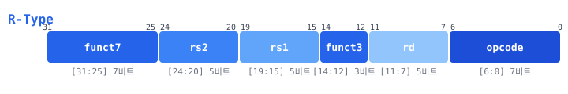
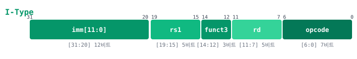
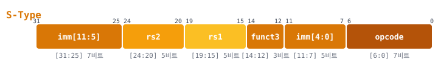
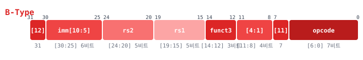
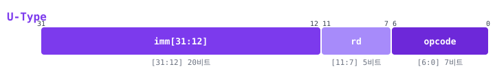
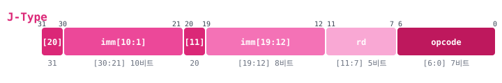
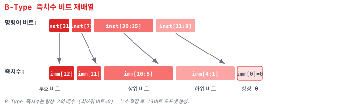
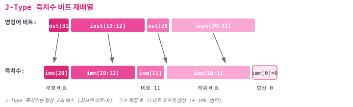

A.1 명령어 인코딩 전체 표
다음 표는 RV32I 기본 정수 명령어 세트의 40개 명령어(ECALL, EBREAK, FENCE 포함)를 타입별로 분류한 것이다.
디코더 설계(Chapter 06) 시 opcode, funct3, funct7 조합으로
명령어를 식별한다. 타입별 색상 코딩을 참고하라.
| 명령어 | 타입 | opcode [6:0] | funct3 | funct7 / imm | 동작 |
|---|---|---|---|---|---|
| R-Type (레지스터-레지스터 연산) — opcode = 0110011 | |||||
ADD |
R | 0110011 |
000 |
0000000 |
rd = rs1 + rs2 |
SUB |
R | 0110011 |
000 |
0100000 |
rd = rs1 - rs2 |
SLL |
R | 0110011 |
001 |
0000000 |
rd = rs1 << rs2[4:0] |
SLT |
R | 0110011 |
010 |
0000000 |
rd = (rs1 < rs2) ? 1 : 0 (부호 있는 비교) |
SLTU |
R | 0110011 |
011 |
0000000 |
rd = (rs1 < rs2) ? 1 : 0 (부호 없는 비교) |
XOR |
R | 0110011 |
100 |
0000000 |
rd = rs1 ^ rs2 |
SRL |
R | 0110011 |
101 |
0000000 |
rd = rs1 >> rs2[4:0] (논리 시프트) |
SRA |
R | 0110011 |
101 |
0100000 |
rd = rs1 >>> rs2[4:0] (산술 시프트) |
OR |
R | 0110011 |
110 |
0000000 |
rd = rs1 | rs2 |
AND |
R | 0110011 |
111 |
0000000 |
rd = rs1 & rs2 |
| I-Type (즉치수 연산) — opcode = 0010011 | |||||
ADDI |
I | 0010011 |
000 |
imm[11:0] | rd = rs1 + sext(imm) |
SLTI |
I | 0010011 |
010 |
imm[11:0] | rd = (rs1 < sext(imm)) ? 1 : 0 |
SLTIU |
I | 0010011 |
011 |
imm[11:0] | rd = (rs1 < sext(imm)) ? 1 : 0 (부호 없는) |
XORI |
I | 0010011 |
100 |
imm[11:0] | rd = rs1 ^ sext(imm) |
ORI |
I | 0010011 |
110 |
imm[11:0] | rd = rs1 | sext(imm) |
ANDI |
I | 0010011 |
111 |
imm[11:0] | rd = rs1 & sext(imm) |
SLLI |
I* | 0010011 |
001 |
0000000 | shamt |
rd = rs1 << shamt (funct7[5]=0) |
SRLI |
I* | 0010011 |
101 |
0000000 | shamt |
rd = rs1 >> shamt (논리, funct7[5]=0) |
SRAI |
I* | 0010011 |
101 |
0100000 | shamt |
rd = rs1 >>> shamt (산술, funct7[5]=1) |
| I-Type (로드) — opcode = 0000011 | |||||
LB |
I | 0000011 |
000 |
offset[11:0] | rd = sext(M[rs1+offset][7:0]) |
LH |
I | 0000011 |
001 |
offset[11:0] | rd = sext(M[rs1+offset][15:0]) |
LW |
I | 0000011 |
010 |
offset[11:0] | rd = M[rs1+offset][31:0] |
LBU |
I | 0000011 |
100 |
offset[11:0] | rd = zext(M[rs1+offset][7:0]) |
LHU |
I | 0000011 |
101 |
offset[11:0] | rd = zext(M[rs1+offset][15:0]) |
| S-Type (스토어) — opcode = 0100011 | |||||
SB |
S | 0100011 |
000 |
offset[11:0] | M[rs1+offset][7:0] = rs2[7:0] |
SH |
S | 0100011 |
001 |
offset[11:0] | M[rs1+offset][15:0] = rs2[15:0] |
SW |
S | 0100011 |
010 |
offset[11:0] | M[rs1+offset][31:0] = rs2[31:0] |
| B-Type (분기) — opcode = 1100011 | |||||
BEQ |
B | 1100011 |
000 |
offset[12:1] | if (rs1 == rs2) PC += sext(offset) |
BNE |
B | 1100011 |
001 |
offset[12:1] | if (rs1 != rs2) PC += sext(offset) |
BLT |
B | 1100011 |
100 |
offset[12:1] | if (rs1 < rs2) PC += sext(offset) (부호 있는) |
BGE |
B | 1100011 |
101 |
offset[12:1] | if (rs1 >= rs2) PC += sext(offset) (부호 있는) |
BLTU |
B | 1100011 |
110 |
offset[12:1] | if (rs1 < rs2) PC += sext(offset) (부호 없는) |
BGEU |
B | 1100011 |
111 |
offset[12:1] | if (rs1 >= rs2) PC += sext(offset) (부호 없는) |
| U-Type (상위 즉치수) — opcode = 0110111 / 0010111 | |||||
LUI |
U | 0110111 |
— | imm[31:12] | rd = imm << 12 |
AUIPC |
U | 0010111 |
— | imm[31:12] | rd = PC + (imm << 12) |
| J-Type (점프) — opcode = 1101111 | |||||
JAL |
J | 1101111 |
— | offset[20:1] | rd = PC+4; PC += sext(offset) |
| I-Type (점프 레지스터) — opcode = 1100111 | |||||
JALR |
I | 1100111 |
000 |
offset[11:0] | rd = PC+4; PC = (rs1+sext(offset)) & ~1 |
| I-Type (시스템) — opcode = 1110011 / 0001111 | |||||
ECALL |
I | 1110011 |
000 |
000000000000 |
환경 호출 (트랩 발생) |
EBREAK |
I | 1110011 |
000 |
000000000001 |
디버거 중단점 |
FENCE |
I | 0001111 |
000 |
fm/pred/succ | 메모리 순서 보장 (본 교재: NOP 처리) |
A.2 명령어 타입별 비트 필드 다이어그램
RV32I의 6가지 명령어 타입은 32비트 명령어 내에서 필드 배치가 다르다.
opcode 필드(비트 [6:0])는 모든 타입에서 동일한 위치에 있어 디코더의 첫 단계에서 타입을 분류할 수 있다.






A.3 즉치수(Immediate) 비트 재배열 상세
B-Type과 J-Type의 즉치수는 명령어 비트 내에서 재배열(reordering)되어 저장된다. 이 설계는 부호 비트(sign bit)를 항상 비트 31에 배치하여 부호 확장 하드웨어를 단순화하고, 타입 간 공통 비트 위치를 최대화하여 즉치수 생성기(Immediate Generator)의 MUX를 줄이기 위함이다.
B-Type 즉치수 재배열

B-Type 즉치수 조립 공식: imm = {inst[31], inst[7], inst[30:25], inst[11:8], 1'b0}
J-Type 즉치수 재배열

J-Type 즉치수 조립 공식: imm = {inst[31], inst[19:12], inst[20], inst[30:21], 1'b0}
A.4 ABI 레지스터 명명규약
RISC-V의 32개 정수 레지스터(x0~x31)에는 ABI(Application Binary Interface)에서
정한 이름과 용도가 있다. C 프로그램과 연동(Chapter 22) 시 이 규약을 따라야 한다.
| 레지스터 | ABI 이름 | 용도 | 호출 규약 |
|---|---|---|---|
x0 |
zero |
하드와이어드 0 (항상 0) | — |
x1 |
ra |
복귀 주소(Return Address) | Caller-saved |
x2 |
sp |
스택 포인터(Stack Pointer) | Callee-saved |
x3 |
gp |
전역 포인터(Global Pointer) | — |
x4 |
tp |
스레드 포인터(Thread Pointer) | — |
x5 |
t0 |
임시 레지스터 / 대체 링크 레지스터 | Caller-saved |
x6 |
t1 |
임시 레지스터 | Caller-saved |
x7 |
t2 |
임시 레지스터 | Caller-saved |
x8 |
s0 / fp |
저장 레지스터 / 프레임 포인터 | Callee-saved |
x9 |
s1 |
저장 레지스터 | Callee-saved |
x10 |
a0 |
함수 인자 / 반환값 | Caller-saved |
x11 |
a1 |
함수 인자 / 반환값 | Caller-saved |
x12 |
a2 |
함수 인자 | Caller-saved |
x13 |
a3 |
함수 인자 | Caller-saved |
x14 |
a4 |
함수 인자 | Caller-saved |
x15 |
a5 |
함수 인자 | Caller-saved |
x16 |
a6 |
함수 인자 | Caller-saved |
x17 |
a7 |
함수 인자 | Caller-saved |
x18 |
s2 |
저장 레지스터 | Callee-saved |
x19 |
s3 |
저장 레지스터 | Callee-saved |
x20 |
s4 |
저장 레지스터 | Callee-saved |
x21 |
s5 |
저장 레지스터 | Callee-saved |
x22 |
s6 |
저장 레지스터 | Callee-saved |
x23 |
s7 |
저장 레지스터 | Callee-saved |
x24 |
s8 |
저장 레지스터 | Callee-saved |
x25 |
s9 |
저장 레지스터 | Callee-saved |
x26 |
s10 |
저장 레지스터 | Callee-saved |
x27 |
s11 |
저장 레지스터 | Callee-saved |
x28 |
t3 |
임시 레지스터 | Caller-saved |
x29 |
t4 |
임시 레지스터 | Caller-saved |
x30 |
t5 |
임시 레지스터 | Caller-saved |
x31 |
t6 |
임시 레지스터 | Caller-saved |
색상 범례: 특수 레지스터 Caller-saved (호출자 저장) Callee-saved (피호출자 저장)
A.5 의사 명령어(Pseudo-instruction) 매핑
RISC-V 어셈블러는 프로그래머의 편의를 위해 의사 명령어(pseudo-instruction)를 제공한다. 이들은 실제 하드웨어 명령어가 아니며, 어셈블러가 하나 이상의 실제 명령어로 변환한다.
| 의사 명령어 | 실제 명령어 | 설명 |
|---|---|---|
nop |
addi x0, x0, 0 |
아무 동작 없음 (NOP = 0x00000013) |
mv rd, rs |
addi rd, rs, 0 |
레지스터 복사 |
not rd, rs |
xori rd, rs, -1 |
비트 반전 (1의 보수) |
neg rd, rs |
sub rd, x0, rs |
부호 반전 (2의 보수) |
li rd, imm |
lui rd, imm[31:12]addi rd, rd, imm[11:0] |
32비트 즉치수 로드 (2개 명령어) |
la rd, symbol |
auipc rd, offset[31:12]addi rd, rd, offset[11:0] |
주소 로드 (PC 상대) |
j offset |
jal x0, offset |
무조건 점프 (복귀 주소 저장 안 함) |
jr rs |
jalr x0, rs, 0 |
레지스터 간접 점프 |
ret |
jalr x0, x1, 0 |
함수 복귀 (jr ra) |
call symbol |
auipc x1, offset[31:12]jalr x1, x1, offset[11:0] |
함수 호출 (원거리) |
tail symbol |
auipc x6, offset[31:12]jalr x0, x6, offset[11:0] |
꼬리 호출 (복귀 주소 저장 안 함) |
beqz rs, offset |
beq rs, x0, offset |
0이면 분기 |
bnez rs, offset |
bne rs, x0, offset |
0이 아니면 분기 |
bgt rs, rt, offset |
blt rt, rs, offset |
rs > rt이면 분기 (피연산자 교환) |
ble rs, rt, offset |
bge rt, rs, offset |
rs <= rt이면 분기 (피연산자 교환) |
bgtu rs, rt, offset |
bltu rt, rs, offset |
rs > rt이면 분기 (부호 없는) |
bleu rs, rt, offset |
bgeu rt, rs, offset |
rs <= rt이면 분기 (부호 없는) |
seqz rd, rs |
sltiu rd, rs, 1 |
rs == 0이면 rd = 1 |
snez rd, rs |
sltu rd, x0, rs |
rs != 0이면 rd = 1 |
sgtz rd, rs |
slt rd, x0, rs |
rs > 0이면 rd = 1 |